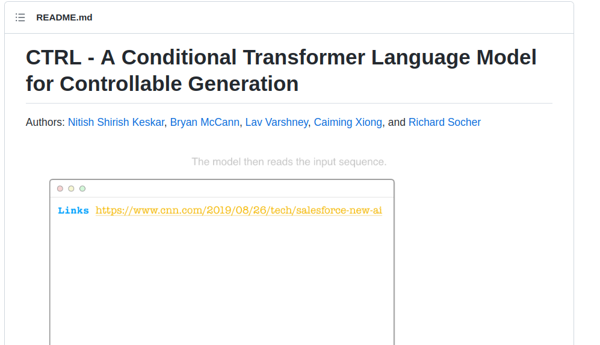

This guide will show you how to generate text that look like Horoscope text in python.

We will use the CTRL model from salesforce https://github.com/salesforce/ctrl I suggest to read the github page becase the majority of the steps in this guide is identical to the guide in their website.
Scope: This guide will cover how to run the generation using CPU. If you want to run using GPU, or train the model with CPU or TPU, you feel free to try it yourself.
In my experience, I successfully train the model on a server with 64 logical cores and 128 GB of RAM. But, dont worry I trained on docker using between 8-32 CPUs at times and it used only about 27GB at the peak of the training process. I cannot train on a laptop with 24GB of ram.
If you want to train using GPU, GPU with 24GB of memory of more might work, But I had tried GPU in the Google Collab Pro (16GB) with unsuccess result. If you run on CPU instance in collab pro with high memory (25 GB), it probabliy wont train too. On TPU instance with ~35GB of RAM may work, But I cannot confirm it.
But, if you want to only run the model, It is relatively easy, you may only need collab not-pro (It may work if you crank the RAM to max), Or using the collab pro.
But, again if you just want to try it and not has much money, also you do not want to risk your money purchasing collab pro or collab more-than-pro, Try to collect some RAM sticks around your house, You will need about 24-32 GB in total. The CPU core should not matter as long as you can wait when it generate text
The problem that you may find that is the CTRL model is the old code(about 3 years) and thus require an old version of Tensorflow (version 1.14) . You cannot run it on the version 2.X.X or newer, I have tried. As you have a computer with 24GB of ram or more and you have to make sure that you dont have any current project that use Tensorflow because you need to downgrade it to version 1.14
Let's begin (You can also look at salesforce/ctrl github, because it is about the same)
Step Zero, you need to get the code, the code from the following https://github.com/ASR-NLP-2022/ctrl. Try git clone it or just download as zip and then extract to the preferred destination.
First, The code need some depandencies, mainly tesorflow (version 1.14) and fastbpe, Install them using pip. You may try using docker or virtualenv. (btw, using python2 not version 3 because the code is an old code, and tensorflow1.14 docker also use python version 2 )
Second, if you plan to run the code from bare metal (not using docker), I suggest skipping this step, and try to generate the text first. It you may able to generate it without any problem.(You may experience a memory leak, which you need to reboot the computer). But if you want to patch the estimator you can run the command
Make sure that you are in the ctrl directory that you just cloned, or unzipped. The directory will have a estimator.patch file. Also check that the keras.py is in the /usr/local/lib/python2.7/dist-packages/tensorflow_estimator/python/estimator/ directory. Or you may have to change the command. And dont forget to back up it before patching.
Lets go to step Three, In the original guide, they said to use gsutil, but to install and use gsutil may be a hassle, (and also we will use the pre-trained Horoscope-based model) we will use the wget commands.
Make a directory (make a folder) called seqlen256_v1.ckpt (Yes, it has dot[.] in the directory name). In directory should be inside a project folder(In the same layer as the existing training_utils directory)
cd to that (seqlen256_v1.ckpt) directory
In side that directory, you will need to get a total of 4 files, that is the model to run the generation
The first file called model.ckpt-413070.data-00000-of-00001 is the biggest file (~12.2GB)
The second file called model.ckpt-413070.meta is the moderate size file (~503MB)
The third file called model.ckpt-413070.index is the small-sized file (~63.1KiB)
The last one called checkpoint which is the smallest of them all (~283B), it is a text file you can open with a text-editor or cat it
To download these files, run the following commands (one at a time)
wget "https://drive.google.com/uc?id=1XCt8IVdIsO9mjHXT7-3FKLcsVFnFH4D8&export=download&confirm=t" -O model.ckpt-413070.data-00000-of-00001
wget "https://drive.google.com/uc?id=1zlG5ZcxiyJnt0Y1U5Y6qSFJfhgi7lWGf&export=download&confirm=t" -O model.ckpt-413070.meta
wget "https://drive.google.com/uc?id=1DTnwpD01sLtAgCfvCDe2aAt8grB0vMoE&export=download&confirm=t" -O model.ckpt-413070.index
wget "https://drive.google.com/uc?id=1lCff4pzcYprHVUL9A0xB2KlQn_k6l28y&export=download&confirm=t" -O checkpoint
Step 3.5 (optional) verify it
When you downloaded all the files but unsure that it is fully correct. Verify them using sha256sum. (sha256sum of very large file can take a long time)
SHA256:
829ac539a013b6bcb62abb5f5bf046c5ddc57d20d2dc5d8690bdf41134d0fabf model.ckpt-413070.data-00000-of-00001
bc2b7d9eb9084b367c626efedff0ef480f5811640c1a6498dc5bd2d81136541d model.ckpt-413070.meta
a6033bd103b40e406f7f9dc2b96079090cd83e504b985c9e221a501f11c63191 model.ckpt-413070.index
45bd4ee913349a8c31ebc57fb0bf52bbd9a948a685e4d61a2825db41e93a18ce checkpoint